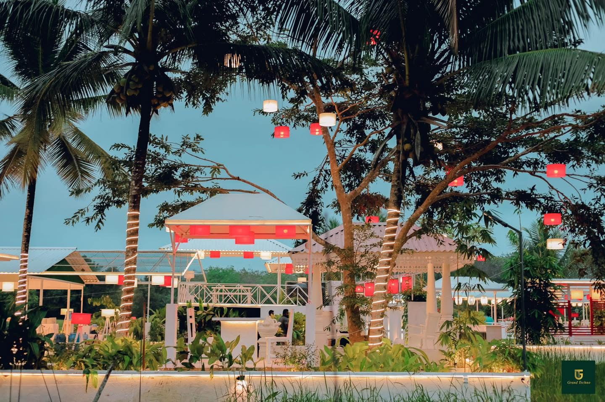
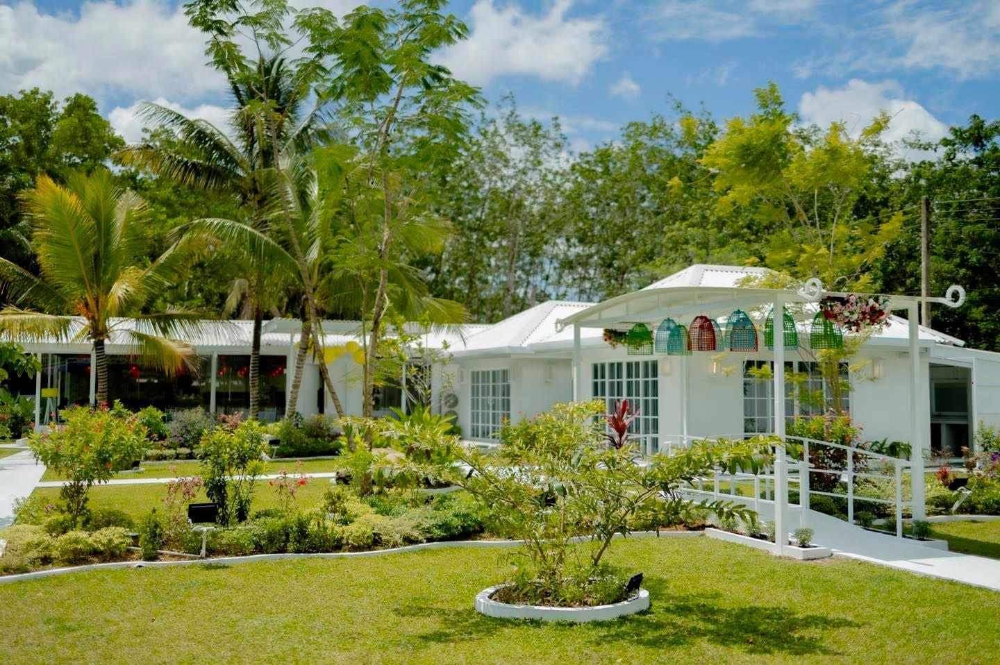
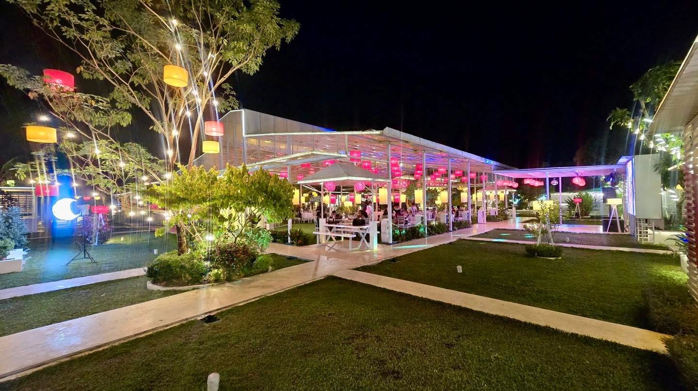
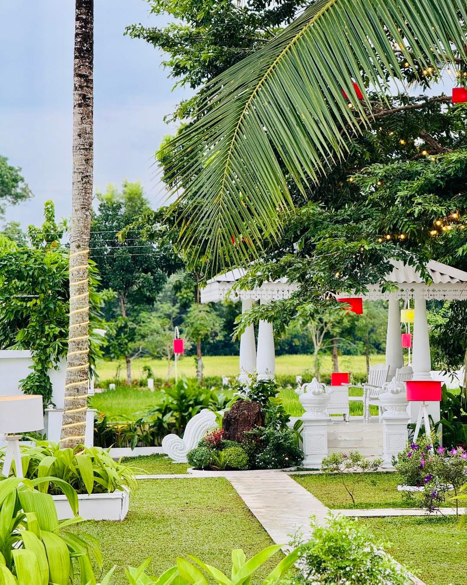
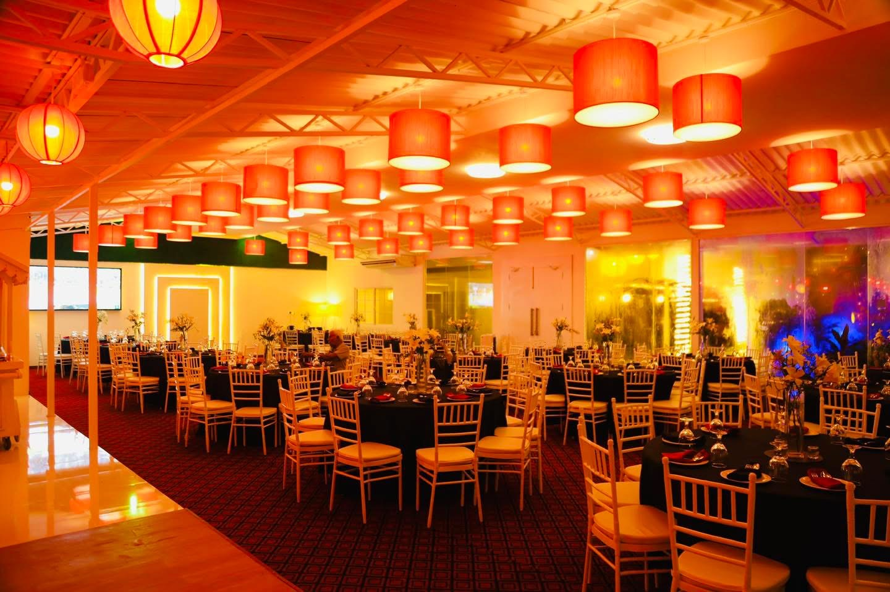
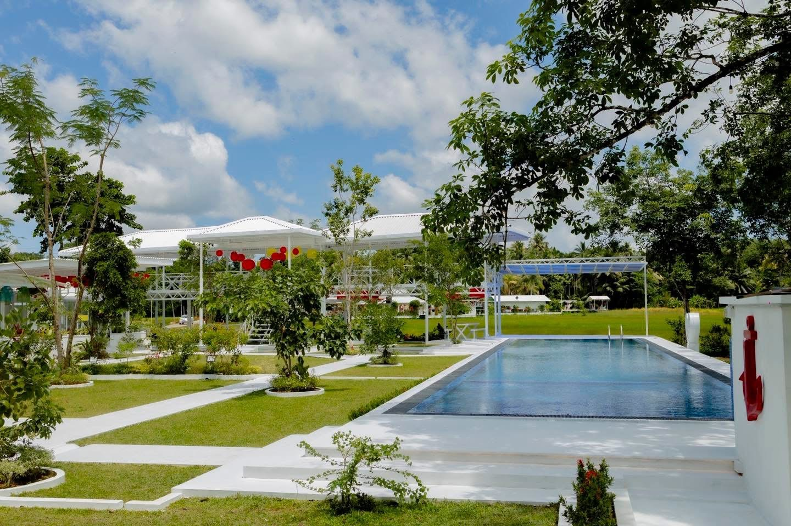
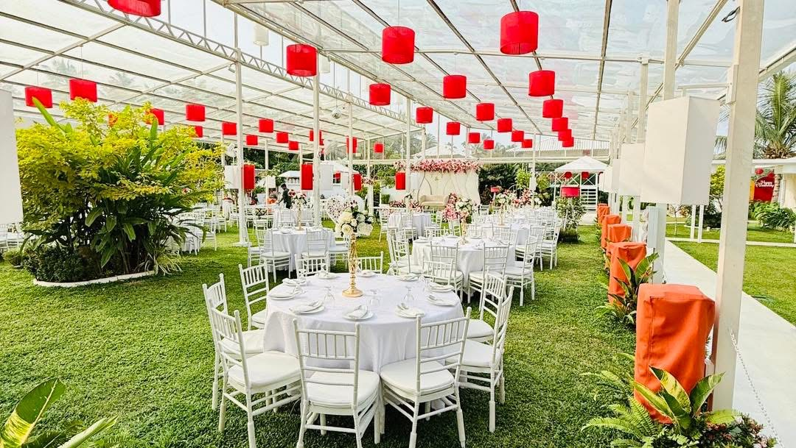

A Little Closer to Nature
Tropical gardens, open skies and green views give every visit a peaceful sense of place.

Nature · Good Food · Great Moments
A place to come together, slow down and make beautiful memories in Alupathwila.
Grand Techno brings dining, leisure and celebrations together in a setting shaped by nature. White architecture, green gardens and our signature red lamps create a place with its own unmistakable character.
Whether you’re joining us for a meal, a quiet afternoon or a meaningful celebration, the idea is simple: good food, beautiful surroundings and time well spent together.


Different experiences, one beautiful place. Wander through the gardens, enjoy a meal, relax by the pool or gather for a celebration — all in the natural surroundings of Alupathwila.
Tropical gardens, open skies and green views give every visit a peaceful sense of place.
Spaces for a quiet conversation, a family meal or a gathering with your favourite people.
White pavilions, signature red lamps and warm evening lighting make a distinctive backdrop.

From sunlit garden paths to the warm glow of evening lanterns, discover the little details that make Grand Techno feel special.



Let’s make time for good food, beautiful surroundings and the people who matter.